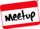
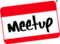
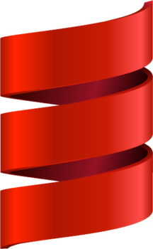

Welcome to Austin Scala Enthusiasts
|  | http://meetup.com/Austin-Scala-Enthusiasts | |
| http://groups.google.com/forum/#!forum/austin-scala-enthusiasts | ||
| http://dir.gmane.org/gmane.org.user-groups.austin.scala | ||
| http://github.com/scala-austin |
|  | http://meetup.com/Austin-Scala-Enthusiasts | |
| http://groups.google.com/forum/#!forum/austin-scala-enthusiasts | ||
| http://dir.gmane.org/gmane.org.user-groups.austin.scala | ||
| http://github.com/scala-austin |
|  | ||
| Scala | @ | Rackspace |
Name: Sukant Hajra
Twitter: @shajra
Freenode (IRC): tnks
The views of this presentation are mine, and not Rackspace’s.
Even my team members may have slightly different interpretations, so please feel free to talk to them too.
Here’s a few that have been working in the Scala code base:
We’ve learned a lot. . . but we’re still learning.
for-yield works with lists. . . (they’re monads)
1 2 3 4 5 6 7 | |
for-yield works with other things. . . (that are also monads)
1 2 3 4 5 6 7 8 9 10 11 | |
for-yield works for your things! Here’s a “free” monad example.
1 2 3 4 5 6 7 8 9 10 | |
def myFunc(d: Domain): Range1 2 3 4 5 6 7 8 9 10 11 12 13 14 | |
1 2 3 4 5 6 7 8 | |
If you have this
val tasks: List[Task] = ...are the tasks running yet?
in Scala:
sealed trait Option[+A]
case class Some[+A](a: A) extends Option[A]
case object None extends Option[Nothing]in Haskell:
data Option a = Some a | None